Research Experience
School of Electrical and Computer Engineering, Purdue UniversityMar 2020 – Present
Research Assistant to Prof. Xiaoqian Wang
Multivariate Time Series Classification with Hierarchical Variational Graph Pooling
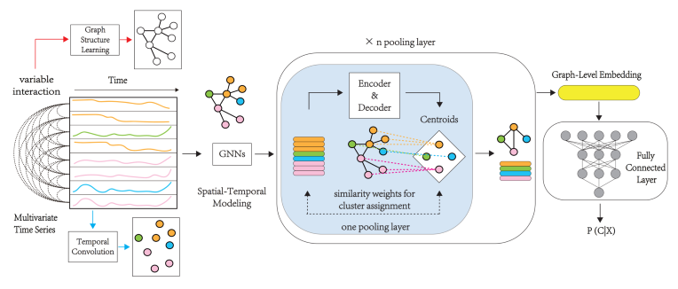• We are the first to propose a hierarchical graph pooling-abased framework to model MTS and hierarchically generate its global representation for MTS classification.
• Designed "MTPool" as an end-to-end joint framework for graph structure learning, temporal convolution, graph representation learning, and graph coarsening.
• Proposed a novel pooling method, "Variational Pooling." The centroids for cluster assignments are input-related to the input graphs, making the model more inductive and leading to better performance.
• Conducted extensive experiments on MTS benchmark datasets, and the empirical results prove that the proposed method's performance is better than state-of-the-art models in most cases.
Parallel Extraction of Long-term Trends and Short-term Fluctuation for Multivariate Time Series Forecasting
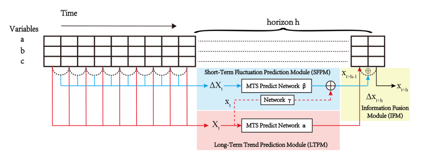• Proposed an MTS forecasting framework to predict long-term trends and short-term fluctuations in parallel.
• Constructed a triplet loss function and integrate more supervision information to extract key features of MTS.
• Validated that PFNet has better performance than state-of-the-art models on various benchmark datasets.
Multivariate Time Series Forecasting based on Heterogeneous Network Embedding
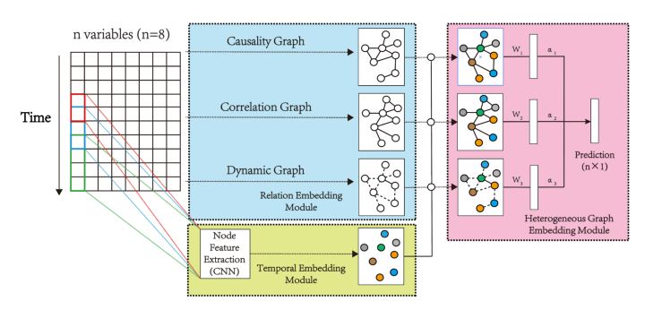• Proposed a heterogeneous graph neural network-based framework that is compatible with taking full advantage of rich relations among MTS variables.
• Constructed a relation embedding module to explore the relations among time series in both dynamic and static approaches.
• Conducted extensive experiments on MTS benchmark datasets. The experimental results validate that the performance of the proposed method is better than state-of-the-art models.
Multivariate Time Series Forecasting with Transfer Entropy Graph
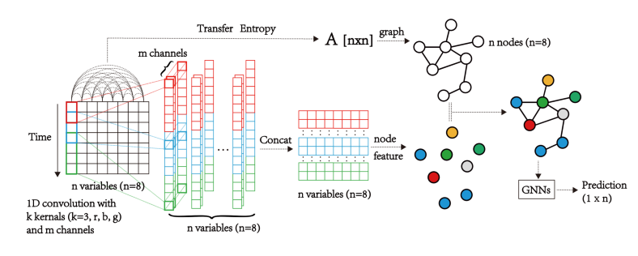• Proposed the end-to-end deep learning framework that considers multivariate time series as a graph structure with causality. The causality among time series is used as prior information to guide the forecasting task, and a graph neural network is utilized to process this graph structure.
• Used transfer entropy to extract the causality among time series and construct the TE graph. A CNN structure is used to comprehensively extract the time series features, which are used as node features in the TE graph.
• Conducted extensive experiments on MTS benchmark datasets, and the results from the experiment have proved that TEGNN out-performs the state-of-the-art models.
School of Big Data and Software, Chongqing UniversityMar 2020 – Present
Research Assistant to Prof. Yueyang Wang
Heterogeneous Attributed Network for Recommendation
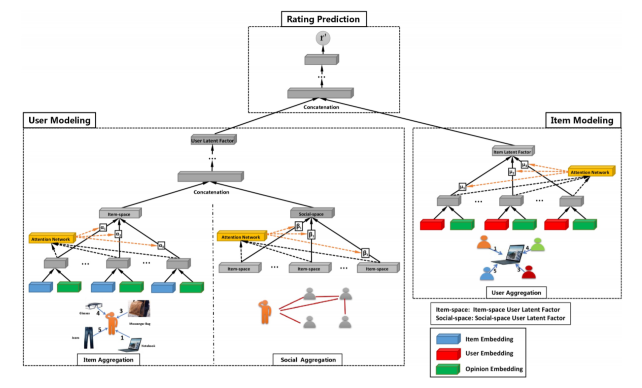
• Proposed a recommendation system based on heterogeneous attributed network (HANRec).
• Used the first-order and second-order neighbors of the node to capture the structural and feature information.
• Designed a full-attention network for neighbors that have a closer relationship with nodes.
• Conducted experiments on the movie ratings dataset “MovieLens” and academic network dataset “AMiner.” HANRec showed better performance than other recommendation methods.
Graph Partitioning based Graph Similarity Computation
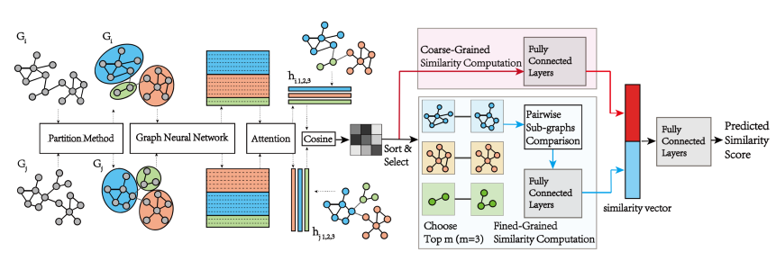• Proposed the graph partitioning based framework to address the challenging problem of similarity computation between large graphs. This framework achieves a good trade-off between accuracy and efficiency.
• Proposed a novel model that extract and aggregate local information effectively to conduct a subgraph-level comparison. This can resolve the challenges of limited representation ability or high time complexity of many graph deep learning-based similarity computation models.
• Conducted extensive experiments on a popular graph similarity/distance metric, GED, based on datasets of different sizes. These experiments and theoretical analysis demonstrate the effectiveness and efficiency of the PSimGNN in graph similarity computation tasks.
School of Computer Science, University of California, Los AngelesMar 2020 – June 2020
Research Assistant to Dr. Yunsheng Bai
Graph Similarity Computation via Graph Coarsening and Matching
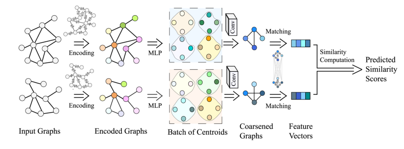• Proposed the first framework, which hierarchically encodes and coarsens graphs and then deploys matching mechanism on the coarsened graph pairs, to address the challenging problem of similarity computation between large graphs.
• Proposed a novel pooling layer "ADAPTIVE POOLING." The generation of centroids in this layer is based on the input graph, which leads to better performance while maintaining permutation invariance.
• Showed significant improvement in time complexity compared to matching models and outperformed matching models, thus far better than embedding models.
• Conducted extensive experiments on real graph datasets and synthetic datasets consisted of large graphs to demonstrate our proposed framework's scalability, effectiveness, and efficiency.
Harvard Medical SchoolAug 2019 – Mar 2020
Research Assistant to Prof. Quanzheng Li
Deep Learning for Medical Image Analysis
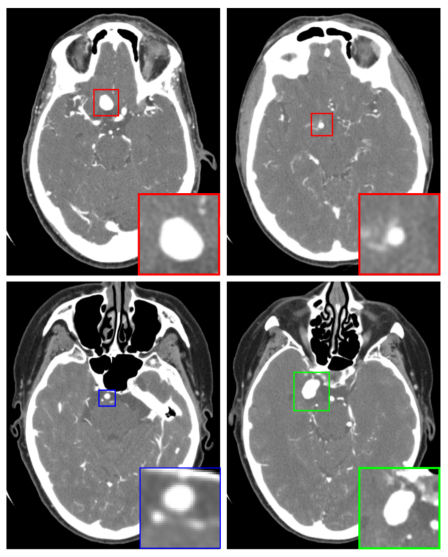• Proposed an automatic cerebral aneurysm diagnosis system, DeepBrain, based on deep learning.
• Used a 3D Faster R-CNN and a U-netlike encoder-decoder structure to detect a candidate’s aneurysm.
• Designed a multi-scale 3D CNN to reduce false positives from 2 per scan to 0.3.
Robotics Laboratory, ZJUOct 2018 – July 2019
Research Assistant to Prof. Rong Xiong
Trampoline Jumping of Quadruped Robot
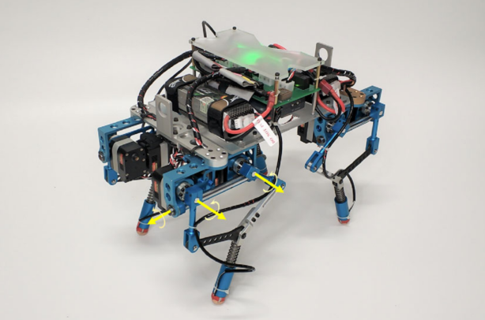• Used a robot without elastic components jumping on a trampoline to solve the control problem: this required appropriate adjustable components and elaborate control algorithms.
• Designed a control algorithm to balance the contact force of feet and avoid oscillation during jumping.
• Adjusted the time delay and models of leg stretching to control the jump height effectively.
• Designed different motion control algorithms to make the robot perform translational and rotational movement while hopping or bounding on the trampoline.
Artificial Intelligence Lab, ZJUJune 2018 – Sept 2018
Research Assistant to Prof. Fei Wu
Deep Learning for Graph Convolutional Network
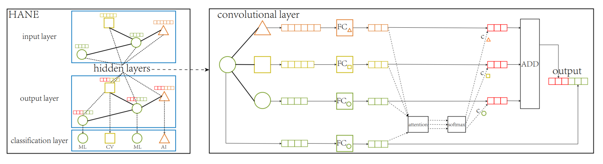• Designed a new network embedding method based on the graph convolution network, HANE, which uses network heterogeneity and node attribute to generate high-quality embedding.
• Used a node aggregation method for heterogeneous networks, enabling nodes to keep their characteristics while collecting information about neighboring nodes. Compared with GraphSAGE, this method achieves 1 ∼ 4 percent point gain in Macro-F1 and 1 ∼ 2 percent point gain in Micro-F1.
• Designed an attention mechanism on graph convolutional networks to leverage not only heterogeneity but also the node attributes. Compared with GraphSAGE, this mechanism achieves 4 ∼ 6 percentage point gain in terms of Macro-F1 and 3 ∼ 5 percentage point gain in terms of Micro-F1.
Institute of Intelligent Control, ZJUMar 2018 – May 2019
Research Assistant to Prof. Dongqin Feng
Power Measurement and Automatic Return of Unmanned Aerial Vehicle (UAV)
• Proposed a general high precision electric quantity detection system based on the Kalman Filter method.
• Designed an innovative way to combine the extended Kalman Filter method and the Particle Filter method to fit the soc-ocv curve.
• Designed the dynamic gain in the EKF algorithm and it can now raise measurement accuracy.
• The algorithm compiled in this project has strong portability. By only adding current and voltage measurement modules we can improve the battery power measurement accuracy and anti-noise interference ability.
Course Projects
Course Project of Natural Language Processing:
Pointer-Generator Network for Text Summarization [code] [report]
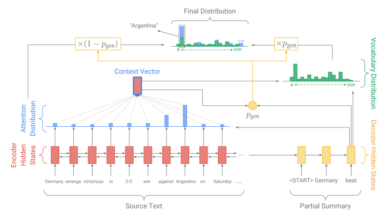• Applied pointer-generator network, which facilitates copying words from original texts by pointing to them. Thus, I improved the accuracy and handled out of vocabulary (OOV) while retaining the ability to generate new words. This network can be thought of as a balance between the extractive method and the abstractive method.
• Applied the coverage model to solve the repetition problem for sequence-to-sequence models (words are often repeated, especially when generating multiple sentences).
• Used Sohu News as a training dataset and tested the model with different news. This demonstrated a good performance in the rouge-n evaluation metric.
Course Project of Computer Vision:
CNN for The Recognition of Handwritten Numbers [code] [report]
• Used MNIST dataset, CNN network, and TensorFlow framework to achieve handwritten digit recognition.
• Used dropout at the fully connected layer to prevent the network over-fitting.
• Adopted the batch gradient descent method to improve the memory utilization and parallelization efficiency of the large matrix multiplication.
Course Project of Math Modeling:
Optimization Model for Riding and Relocating Rules [code] [report]
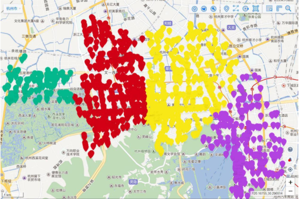• Used a neural network regression method to analyze and predict the starting capacity of each return point.
• Used the classification method of clustering to divide the return points into different categories.
• Visualized our model with real data from Hangzhou bicycles to verify its effectiveness.
© 2020 Mr.Duan
Last update: July. 4, 2020